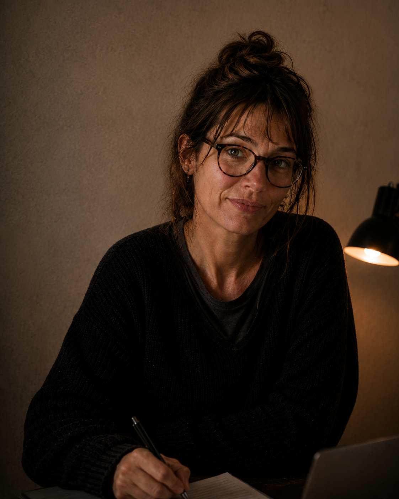

À propos
Le Veilleur Rennais est un journal local indépendant consacré à la vie rennaise sous toutes ses formes.
Vous y trouverez des faits divers, des initiatives locales, des portraits d'habitants, des événements culturels, des histoires liées au patrimoine rennais ainsi que certains phénomènes insolites ou difficiles à expliquer.
Mon travail n'est pas de chercher le sensationnel.Il s'agit simplement de raconter les histoires qui occupent rarement les premières pages : celles d'un quartier, d'un commerce, d'une association, d'un témoin ou d'un événement passé presque inaperçu. Celles dont on parle peu, que l'on oublie vite ou que personne ne prend le temps d'écouter.
Parce que, parfois, ce sont justement ces petites histoires qui en disent le plus sur notre ville.

Clara Aubin
Journaliste depuis onze ans, je m'intéresse aux faits divers, à la vie rennaise et aux histoires qui disparaissent parfois un peu trop vite des journaux.
Je ne prétends pas détenir toutes les réponses. Mon travail consiste à écouter, recouper les témoignages et poser les questions que d'autres ne prennent plus toujours le temps de poser.
Le Veilleur Rennais est un projet indépendant que je fais vivre en parallèle de mon activité de journaliste. Il existe grâce au soutien de ses lecteurs... et à beaucoup trop de café.
Nous contacter
Vous souhaitez signaler un événement, partager un témoignage, proposer un sujet ou apporter une précision à un article ?
Vous pouvez écrire à :
clara.aubin@veilleur-rennais.fr
Les témoignages peuvent être publiés anonymement sur demande. Merci de préciser dans votre message si vous ne souhaitez pas que votre nom apparaisse.
« Parce que les petites histoires
finissent parfois par raconter
les plus grandes. »